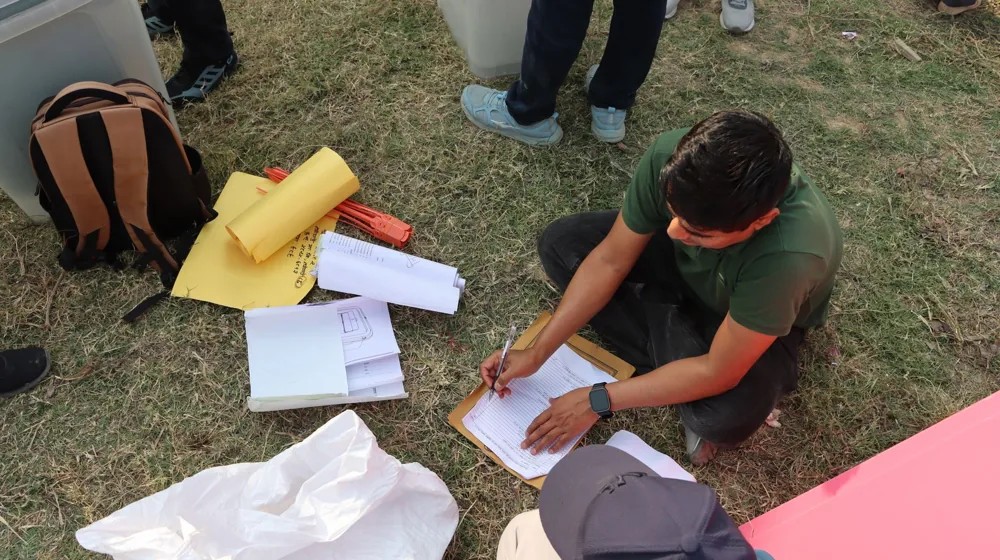

이재명 지지율, 왜 지금 최고 관심사일까? 숨겨진 정치 판도 변화 📊
사진: Edmond Dantès / Pexels (무료 이미지, 출처 표기)
오늘의 핫이슈: '이재명 지지율' 급부상, 단순한 숫자 이상인 이유

오늘 아침, 인터넷을 뜨겁게 달군 키워드를 보셨나요? '이재명 지지율', 이 평범해 보이는 단어가 실시간 검색어 상위권을 장악하며 수많은 사람들의 궁금증을 자아냈습니다. 과연 이 수치 하나가 대한민국 정치에 어떤 파장을 예고하고 있는 걸까요? 그리고 왜 지금, 이재명 지지율이 유독 높은 관심을 받고 있는 걸까요?
단순히 특정 정치인의 인기를 넘어, 이 키워드의 급부상은 복잡한 정치 지형의 변화와 국민들의 숨겨진 심리를 반영하는 하나의 신호탄일 수 있습니다. 최근의 국내외 정세, 주요 정책 이슈, 그리고 다가오는 선거 국면 등 여러 요인들이 복합적으로 작용하며 대중의 시선이 한곳으로 모인 것이죠.
여론조사, '보는 법'이 따로 있다? 숨겨진 비밀들
우리는 매일같이 쏟아지는 여론조사 결과를 접하지만, 그 숫자들이 어떻게 만들어지고, 어떤 의미를 가지는지 정확히 아는 사람은 많지 않습니다. '지지율'이라는 숫자는 단순히 응답자들의 호불호를 넘어, 조사 방식과 질문의 뉘앙스에 따라 천차만별의 결과를 보여줄 수 있는 복합적인 지표입니다.
특히, 조사 기관마다 다른 표본 추출 방식, 조사 시기, 응답률, 그리고 보정 방식 등은 미묘하지만 중요한 차이를 만듭니다. 예를 들어, ARS 조사는 특정 연령층이나 적극적인 유권자층의 의견이 과대표될 수 있고, 전화면접 조사는 응답률이 낮아 특정 계층의 의견만 반영될 가능성도 있습니다.
다음은 주요 여론조사 기관들의 일반적인 특징을 간략히 비교한 표입니다.
이처럼, 지지율이라는 숫자를 볼 때는 '어떤 조사가 언제 어떻게 진행되었는가'를 함께 고려해야 합니다. 단순한 수치 비교보다는 그 이면에 숨겨진 맥락을 읽는 눈이 필요한 것이죠.
지지율 변화가 말하는 것: 거대한 정치 지형의 움직임
한 정치인의 지지율 변화는 단순히 그 사람의 인기가 오르내리는 것을 넘어섭니다. 이는 곧 정치권 전반의 역학 관계, 각 당의 전략, 심지어는 국정 운영 방향에까지 영향을 미칠 수 있는 중요한 지표가 됩니다.
지지율이 상승하면 당내 입지가 강화되고, 이는 공천 과정이나 정책 결정에 더 큰 목소리를 낼 수 있는 기반이 됩니다. 반대로 지지율이 하락하면 비판에 직면하거나 당내 경쟁자들의 견제를 받을 가능성이 커지죠. 이러한 변화는 연말 예산 심의, 중요 법안 처리, 그리고 다음 총선이나 대선 구도에까지 직간접적인 영향을 미치게 됩니다.
특히, 중도층의 움직임은 지지율 변동의 핵심입니다. 전통적인 지지층은 어느 정도 고정되어 있지만, 중도층의 표심이 어디로 향하느냐에 따라 전체 판세가 뒤바뀔 수 있기 때문입니다. '이재명 지지율'에 대한 관심이 뜨거운 이유도, 그 숫자가 현재 대한민국 정치의 큰 흐름을 읽을 수 있는 중요한 단서가 되기 때문일 겁니다.
우리는 왜 '지지율'에 주목하는가? 민심을 읽는 거울
특정 정치인의 지지율이 급상승 검색어가 되는 현상은 우리 사회가 정치에 얼마나 민감하게 반응하고 있는지를 보여줍니다. 사람들은 왜 이렇게 정치인의 지지율에 열광하거나 주목하는 걸까요? 이는 단순히 정치적 지지 여부를 넘어, 현재 대한민국 사회의 심층적인 욕구와 불안을 반영하는 거울이기 때문입니다.
많은 국민들은 지지율을 통해 여론의 흐름을 파악하고, 자신의 의견이 과연 다수의 생각과 일치하는지, 혹은 소수의 의견에 머물러 있는지를 가늠하려 합니다. 또한, 지지율 변화는 특정 정책이나 사건에 대한 대중의 반응을 측정하는 바로미터 역할을 하기도 합니다. 경제 상황, 사회 문제, 정부의 대응 방식 등 복합적인 요소들이 지지율에 투영되어 나타나는 것이죠.
이러한 관심은 단순히 누가 더 높은지 비교하는 것을 넘어, '지금 우리 사회가 어떤 방향으로 가고 있는지', '어떤 이슈에 주목해야 하는지'에 대한 집단적인 성찰의 과정이라고 볼 수도 있습니다.
앞으로의 전망: '이재명 지지율'이 던지는 메시지
급상승 검색어에 오른 '이재명 지지율'은 단순히 한때의 트렌드로 끝나지 않을 것입니다. 이는 앞으로 전개될 대한민국 정치 지형에 중요한 메시지를 던지고 있습니다.
현재의 지지율 변화가 지속될지, 아니면 일시적인 현상일지는 아무도 장담할 수 없습니다. 하지만 중요한 것은 이 숫자가 정치권과 국민 모두에게 '현재의 상황을 주시하고 변화에 대비해야 한다'는 분명한 신호를 보내고 있다는 점입니다. 앞으로 어떤 정책이 발표되고, 어떤 정치적 사건들이 터질지, 그리고 그에 대한 국민들의 반응은 어떠할지 주의 깊게 지켜봐야 할 때입니다.
이재명 지지율이라는 키워드가 보여준 대중의 뜨거운 관심은, 곧 대한민국 사회가 변화와 새로운 방향을 모색하고 있다는 증거일지도 모릅니다. 앞으로 정치권이 이 메시지를 어떻게 해석하고, 또 어떻게 반응할지 주목해 봅시다.
🔗 이 글도 함께 보면 좋아요: 네이마르, 대체 왜 또? 충격 이적설 뒤에 숨겨진 진짜 이야기